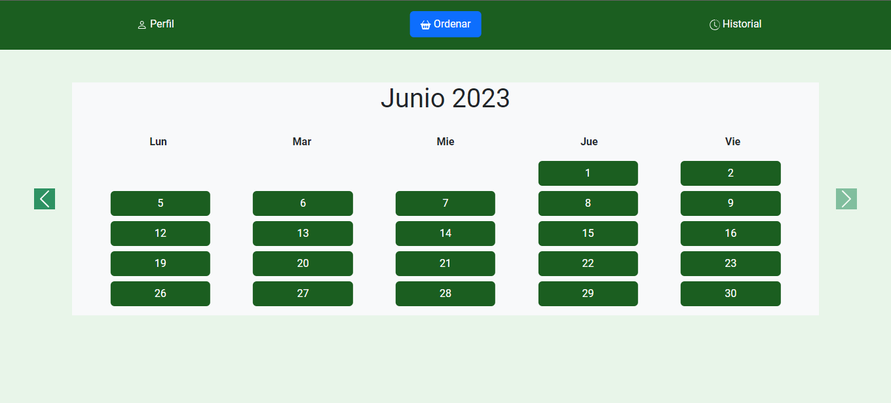
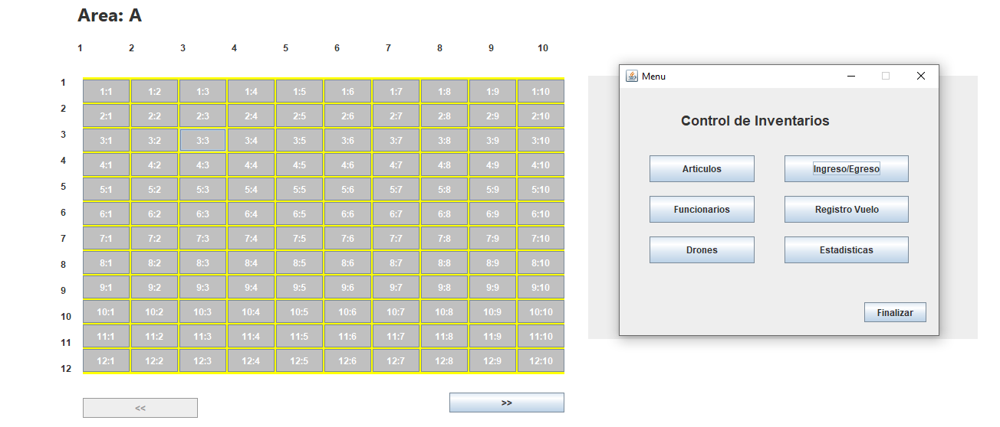
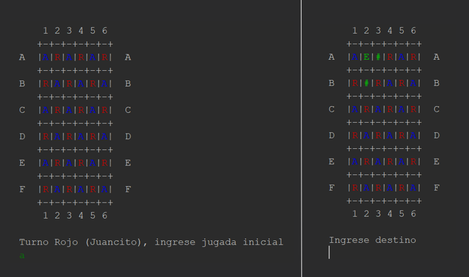
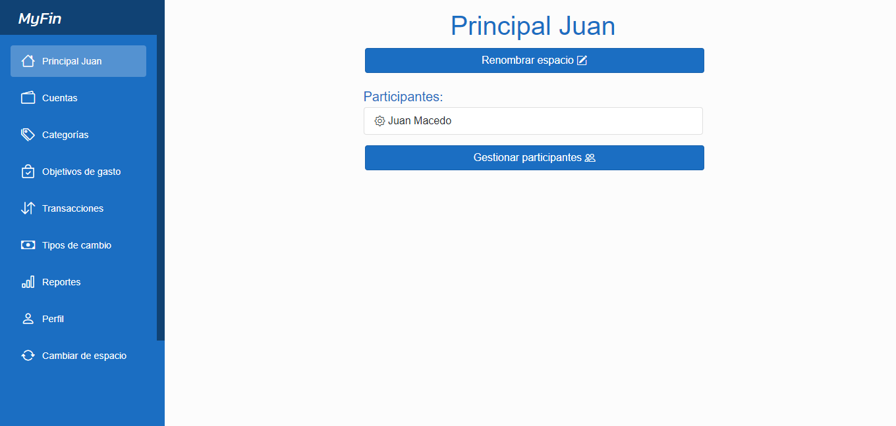

Haz clic en un proyecto para ver los detalles del mismo. Puedes navegar por los
elementos arrastrando el mouse.
Navegación

HomeCanteen es una plataforma diseñada específicamente para
cantinas
escolares, que revoluciona la forma en que los padres gestionan los pedidos y
supervisan el consumo de sus hijos en el entorno escolar. Con una interfaz
amigable y una amplia variedad de opciones de menú de la cantina, HomeCanteen
permite a los padres explorar las opciones de alimentos diarios, realizar
pedidos personalizados para sus hijos y realizar un seguimiento en tiempo real
del consumo en la escuela.
Desafíos: Aplicación desarrollada en equipo de tres
estudiantes. El proyecto fue
iniciado con la definición de los requerimientos utilizando distitntas técnicas
de elicitación
(entrevistas, encuestas, referencias de la web). Dichos requerimientos debieron
ser priorizados
debido al tiempo acotado del que se disponia para el desarrollo de la
aplicación. A su vez, fueron
utilizadas herramientas nuevas como bootstrap, node.js y jest.
Tecnologías: Html, Css, JavaScript, Git,
Node.js, Jest, Bootstrap.

El proyecto control de inventarios es una aplicación que emplea
tecnología de drones para optimizar la gestión de inventario en un depósito
compuesto por cinco áreas independientes. Cada área se divide en espacios que
almacenan cargas identificadas por códigos únicos. La aplicación permite
registrar artículos, funcionarios y drones, así como gestionar el ingreso y
egreso manual de cargas en los espacios. Además, se pueden cargar datos de
vuelos de drones desde archivos .txt, identificando vuelos exitosos y mostrando
diferencias con los registros manuales. La aplicación también ofrece la emisión
de estadísticas relacionadas con los drones y sus vuelos.
Tecnologías: Java.

Juego Distancia consiste en un juego de mesa
desarrollado en Java, en el que dos
jugadores compiten estratégicamente. En este juego, las piezas rojas y azules se
enfrentan en un tablero donde su objetivo es comer las piezas del oponente hasta
que ya
no quede ninguna. Los jugadores deben planificar cuidadosamente sus movimientos
y tomar
decisiones estratégicas para superar a su rival en una batalla de habilidad y
astucia.
Tecnologías: Java.
Serie de ejercicios en C++. Fue introducido el concepto de manipulación de
memoria a través de punteros, aplicando algoritmos ampliamente conocidos.
Además, otro gran tema del proyecto fue la construcción y gestión de estructuras
de datos fundamentales como árboles, listas, pilas y colas, desarrollando
habilidades esenciales para la optimización de algoritmos y la gestión eficiente
de datos.
Tecnologías: C, C++.

MyFin es una aplicación que tiene como misión crear un mundo
donde la administración de las finanzas personales es tan fácil como enviar un
mensaje de texto. Un mundo donde no hay que preocuparse por dónde se va el
dinero
personal cada mes, porque se tiene un asistente inteligente que lo hace por ti.
Desafíos: Aplicación desarrollada en equipo de tres
estudiantes.
El proyecto fue desarrollado en su totalidad utilizando la metodología TDD,
realizando
los test antes de modelar cada clase. También se realizó un diseño UML previo en
busca de
una modularización de la solución, generando paquetes como dominio, lógica y
memoria.
En un futuro el paquete memoria será reemplazado por una base de datos.
Fueron utilizadas herramientas nuevas como Blazor y .Net.
Tecnologías: .Net, Blazor, C#, MSTest.
Stack Actual
Stack
Actual
Mi conjunto actual de tecnologías representa mi base sólida de
habilidades y mi área de
enfoque actual. Estas son las tecnologías y herramientas con las que me siento más
cómodo y en las que
estoy trabajando para especializarme aún más.
Front-End
Html
Css
JavaScript
Bootstrap
.Net
Git
Back-End
Java
C#
C++
SQL
NodeJs
Jest
Navegación
HomeCanteen es una plataforma diseñada específicamente para
cantinas
escolares, que revoluciona la forma en que los padres gestionan los pedidos y
supervisan el consumo de sus hijos en el entorno escolar. Con una interfaz
amigable y una amplia variedad de opciones de menú de la cantina, HomeCanteen
permite a los padres explorar las opciones de alimentos diarios, realizar
pedidos personalizados para sus hijos y realizar un seguimiento en tiempo real
del consumo en la escuela.
Desafíos: Aplicación desarrollada en equipo de tres estudiantes. El
proyecto fue
iniciado con la definición de los requerimientos utilizando distitntas técnicas de
elicitación
(entrevistas, encuestas, referencias de la web). Dichos requerimientos debieron ser
priorizados
debido al tiempo acotado del que se disponia para el desarrollo de la aplicación. A
su
vez, fueron
utilizadas herramientas nuevas como bootstrap, node.js y jest.
Tecnologías: Html, Css, JavaScript, Git,
Node.js, Jest, Bootstrap.
El proyecto control de inventarios es una aplicación que emplea
tecnología de drones para optimizar la gestión de inventario en un depósito
compuesto por cinco áreas independientes. Cada área se divide en espacios que
almacenan cargas identificadas por códigos únicos. La aplicación permite
registrar artículos, funcionarios y drones, así como gestionar el ingreso y
egreso manual de cargas en los espacios. Además, se pueden cargar datos de
vuelos de drones desde archivos .txt, identificando vuelos exitosos y mostrando
diferencias con los registros manuales. La aplicación también ofrece la emisión
de estadísticas relacionadas con los drones y sus vuelos.
Tecnologías: Java.
Juego Distancia consiste en un juego de mesa
desarrollado en Java, en el que dos
jugadores compiten estratégicamente. En este juego, las piezas rojas y azules se
enfrentan en un tablero donde su objetivo es comer las piezas del oponente hasta
que ya
no quede ninguna. Los jugadores deben planificar cuidadosamente sus movimientos
y tomar
decisiones estratégicas para superar a su rival en una batalla de habilidad y
astucia.
Tecnologías: Java.
Serie de ejercicios en C++. Fue introducido el concepto de manipulación de
memoria a través de punteros, aplicando algoritmos ampliamente conocidos.
Además, otro gran tema del proyecto fue la construcción y gestión de estructuras
de datos fundamentales como árboles, listas, pilas y colas, desarrollando
habilidades esenciales para la optimización de algoritmos y la gestión eficiente
de datos.
Tecnologías: C, C++.
MyFin es una aplicación que tiene como misión crear un mundo
donde la administración de las finanzas personales es tan fácil como enviar un
mensaje de texto. Un mundo donde no hay que preocuparse por dónde se va el dinero
personal cada mes, porque se tiene un asistente inteligente que lo hace por ti.
Desafíos: Aplicación desarrollada en equipo de tres estudiantes.
El proyecto fue desarrollado en su totalidad utilizando la metodología TDD,
realizando
los test antes de modelar cada clase. También se realizó un diseño UML previo en
busca
de
una modularización de la solución, generando paquetes como dominio, lógica y
memoria.
En un futuro el paquete memoria será reemplazado por una base de datos.
Fueron utilizadas herramientas nuevas como Blazor y .Net.

 Linkedin
Linkedin
 GitHub
GitHub